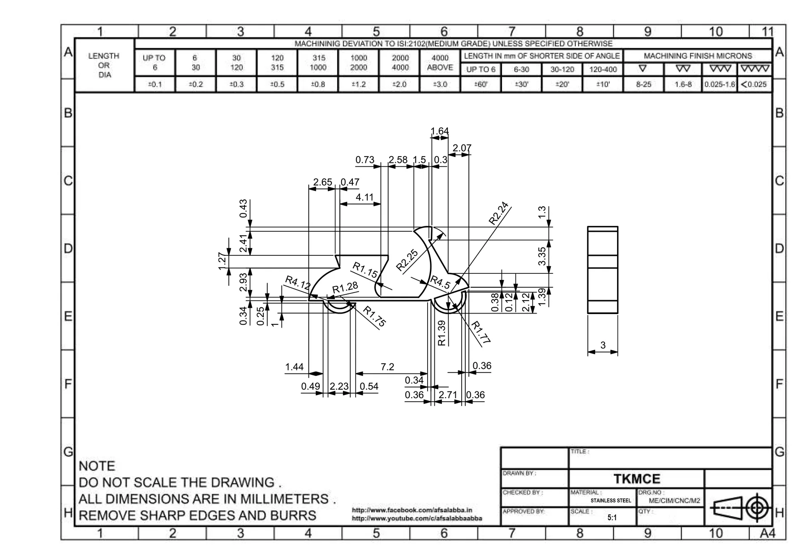

EDM Scooter
Semester 4
A wire-cut job on the Concord Wire EDM. Turn the 3D model, then study the drawing, the cutting parameters and the experiment below.
3D Model
Loading 3D model…
Drag to rotate · Scroll or pinch to zoom · Right-drag or two fingers to pan
Engineering Drawing

Wire EDM Parameters
The Concord Wire EDM (table 200 × 340 mm, table travel 120 × 150 mm) is built in India; its control and CAM software come from Suzhou Baoma, China. The X and Y axes of the table are driven by stepper motors. The 2D figure is drawn, a wire path is made from it and sent to the machine, so no G code is written. Students change only three values: Pulse OFF, Pulse ON and IP.
Default values
| Parameter | Default | Students may set |
|---|---|---|
| Pulse OFF (ratio, no unit) | 10 | 5 – 12 |
| Pulse ON (µs) | 35 | 30 – 40 |
| IP (level, no unit) | 2 | 1 – 6 |
| Allowance | 0 | Fixed |
| Group ON (GP on) | 1 | Fixed |
| Group OFF (GP off) | 0 | Fixed |
| Wire speed | 2 | Fixed |
| Voltage | Low | Fixed |
| V-F (follow speed) | 5 | Fixed |
| Max speed | 150 | Fixed |
⚠ Values marked Fixed are not to be changed.
What each parameter does
Pulse OFF
Pulse off time: the gap between two sparks. It has no unit: the number is a ratio to the Pulse ON time, not a time in µs.
If you raise it:
- Cutting speed goes down
- Surface finish gets better
- Chips are flushed out more easily
Pulse ON
Pulse on time: how long each spark lasts, in microseconds (µs). 35 means about 35 µs.
If you raise it:
- Cutting speed goes up
- Surface finish gets worse
- The wire breaks more easily
IP (current)
The power of each spark: the number of power tubes switched on. It has no unit and is not the current in amperes. It can be set from 1 to 6.
If you raise it:
- Cutting speed goes up
- Surface finish gets worse
- The wire breaks more easily
Dielectric Fluid
The wire and the work are cut in a dielectric fluid: deionised (DM) water mixed with a working-fluid gel.
Deionised (DM) water
Ordinary water carries dissolved salts as ions, so it conducts current. Deionised water, also called DM (demineralised) water, has these ions removed by an ion-exchange resin, so it is an insulator. A spark can jump only when the voltage across the small gap between the wire and the work is high enough, so it strikes at one exact point.
⚠ Use only DM water. Tap water conducts current, so the sparks spread and the cutting is unstable.
What the fluid does
- Insulates: the spark jumps only across the gap, at one point.
- Recovers in Pulse OFF: after each spark the gap becomes an insulator again, ready for the next spark.
- Flushes: it carries the chips out of the gap and down through the table to the tank. Chips left in the gap cause short circuits and break the wire.
- Cools the wire and the work.
- Keeps air away: the spark happens under the fluid, so oxygen cannot reach it and the metal does not burn.
Working-fluid gel
A gel is mixed into the DM water. It helps the gap recover and the chips flush out, stops rust on the work and the table, and lets the wire run smoothly.
Operating the Machine
The steps to switch on the machine, draw the figure, make the wire path, send it to the machine and switch off.
⚠ Do not operate the machine from this page alone – always work under the guidance of an instructor or an experienced person. We are not responsible for any loss, damage or injury that results from using this information.
Machine ON
- Main panel ON
- Stabilizer ON (automatic: two beeps, then a click)
- Machine power ON (turn the key)
System ON
- UPS ON
- CPU ON
- Press F1 (to continue)
Running setup
- Open the Wire Cut software
- Select the drive TKMCE MECH (if more than one drive is shown)
- Release the emergency stop
CAD
- Open the NCCAD software
- Draw the 2D figure (line, rectangle, circle and arc tools, as in AutoCAD)
Import from AutoCAD
- File
- Import AutoCAD DXF
- Select the file
- Open (the figure appears)
Note: the drawn figure shows as a white line.
CAM (tool path)
- WEDM menu
- Create path 1 wizard
- Click the start point on the figure
- Next
- Direction (click the clockwise or anticlockwise arrow)
- Next
- Finish
Note: the figure turns from white to blue once the path is made.
Parameters & Offset
- WEDM menu
- Create path 2
- Offset = wire radius
- Left offset
- Outline
- To Database
- Change the parameters
- OK
- Check all the values
- OK
- Left-click the blue figure
- Right-click outside the figure
Note: after the left-click the figure turns dotted. After the right-click the new path appears as a red line. With Outline it is just outside the figure; with Inside it is just inside. If no offset is given, the red line sits on top of the blue figure.
Send Path
- WEDM menu
- Send path 2 to Wire Cut
- Select the drive TKMCE MECH
- Left-click the red path
- Right-click outside the figure
- Wait 2 – 3 seconds
Note: the red path shows as selected after the left-click.
Offset
X axis
- Move the wire rapidly to a safe distance from the X offset position
- Wire ON
- HF power ON
- Move slowly in X until the wire touches the work and a spark is seen
- Press X0 in the DRO (Digital Read Out)
- Move the wire back from the work
- Wire OFF (HF power goes off with it)
Y axis
- Move the wire rapidly to a safe distance from the Y offset position
- Wire ON
- HF power ON
- Move slowly in Y until the wire touches the work and a spark is seen
- Press Y0 in the DRO
- Move the wire back from the work
- Wire OFF (HF power goes off with it)
Running the program
- Move the wire to X0 Y0
- Work Start (in the Wire Cut window)
- OK
- OK in the Finish box (when the work is complete)
Note: after the first OK the machine takes 1 – 2 seconds to start: the wire runs, HF power comes on, the dielectric pump starts and the stepper motors of X and Y are engaged.
To pause or stop
- Work Pause (to pause the cut)
- Stop
- OK
Note: after Work Pause a new path cannot be sent from NCCAD. Press Stop and OK first to reset the path.
Machine OFF
- Press the emergency stop
- Close all the software
- Shut down the computer (Alt + F4 or Shut down)
- UPS OFF (after the computer has shut down)
- Machine power OFF (turn the key)
- Main panel OFF
Parameter Experiment
A stainless steel bar, 10 × 10 mm, is cut across, one 5 mm piece at a time, so each piece is 10 × 10 × 5 mm. For each cut one parameter is changed, the others are kept the same, and the cutting time is noted in seconds. The tables and graphs below show how each parameter changes the time.
Changing the values for each cut
- WEDM menu
- Create path 2
- To Database
- Change the parameters
- OK
Pulse OFF vs Time
Kept the same: Pulse ON = 35, IP = 3
| Pulse OFF | Time (s) |
|---|---|
| 6 | 236 |
| 8 | 295 |
| 10 | 362 |
| 12 | 425 |
A longer Pulse OFF cuts slower: the time rises from 236 s to 425 s, the biggest change of the three.
Pulse ON vs Time
Kept the same: IP = 3, Pulse OFF = 5
| Pulse ON | Time (s) |
|---|---|
| 32 | 364 |
| 34 | 358 |
| 36 | 356 |
| 38 | 350 |
A longer Pulse ON cuts a little faster: the time falls only from 364 s to 350 s.
IP vs Time
Kept the same: Pulse ON = 35, Pulse OFF = 5
| IP | Time (s) |
|---|---|
| 1 | 300 |
| 2 | 210 |
| 3 | 230 |
| 4 | 180 |
A higher IP cuts faster: the time falls from 300 s to 180 s.
Your Experiment
Cut a 20 × 6 mm stainless steel plate into 2.5 mm pieces. Change one parameter for each cut, keep the others the same and note the time in seconds. Then draw the Pulse OFF, Pulse ON and IP graphs and compare them with the results above.
Viva Questions
Tick one answer for each question, then press Submit.